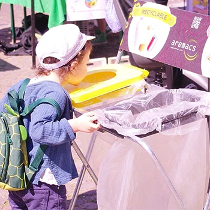
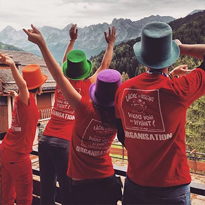
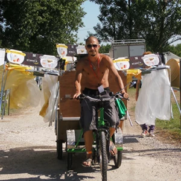

NOTRE DÉMARCHE PRATIQUE
De l’instant événementiel à la pérennité des pratiques éco-responsables…
L’instant événementiel est éphémère dans sa présence sur un territoire donné, mais le suivi des pratiques et l’accompagnement proposé par Aremacs permet des changements
significatifs tant dans les pratiques du secteur que dans les comportements des publics sur les sites où nous intervenons. De plus, nous permettons aux collectivités
et à tous les acteurs de mieux connaître le fonctionnement événementiel et que ces moments de partage soient aussi des fondements de prise de conscience environnementale
grâce à la rencontre active que nous faisons avec le public et la massification des changements de comportement.

Rassembler, fédérer en amont de la manifestation
L’organisation d’évènements nécessite la collaboration étroite d’un grand nombre de partenaires.
Aremacs se propose de rassembler les différentes acteurs impliqués dans la gestion des déchets sur ces sites :
organisateurs, collectivités locales, services municipaux, partenaires privés etc.
Cette synergie ayant pour effet de :
° Créer un échange durable entre organisateurs, collectivités locales, institutions et citoyens.
° Permettre aux organisateurs de mieux appréhender les impacts environnementaux liés à leur manifestation et de réfléchir par exemple à une réduction
à la source des déchets, aux types de gobelets utilisés, à leurs consommations d’énergie et d’eau, au maintien des paysages et de l’écosystème environnant, aux modes de transports utilisés,
à la réutilisation des matériaux nécessaires au déroulement de leur évènement etc.

Informer, impliquer et valoriser pendant la manifestation
Mentionnés sur les programmes et les billets, expliqués dans des stands, appuyés par des actes, mis en valeur par des spectacles vivants, les bénéfices du recyclage et
de la réduction des déchets peuvent être facilement intégrés par le public. Renforcé par une approche ludique et conviviale, l’usager consommateur devient usager acteur.
Aremacs se propose de mettre en place lors de ces manifestations les outils de communications nécessaires à cette prise de conscience :
° En travaillant en amont avec les organisateurs, afin d’intégrer sur les programmes et les billets un pictogramme, un texte, permettant de
sensibiliser le public dès l’achat de son billet.
° En informant le public, les bénévoles, les artistes et les différents partenaires de l’évènement, sur un stand présent durant toute la durée
de l’évènement, sur la politique de gestion des déchets de sa commune, sur les filières de recyclage, le trajet des déchets et leur réutilisation, sur les enjeux
d’une gestion durable des ressources de la planète.
° En profitant du cadre convivial d’un festival et de l’événement sportif pour mettre en place des animations sur le thème de l’environnement, impliquant le public,
jeune ou moins jeune, présent sur ces évènements.
De plus, aremacs met à disposition des organisateurs son propre matériel de collecte et dispose sur l’ensemble du site un nombre important de supports de tri, étudiés
pour être visibles et facilement utilisables, afin de responsabiliser en premier lieu le public présent. Les adhérents de l’association deviennent à cette occasion
des bénévoles motivés pour renforcer la communication auprès du public en gardant un site propre tout au long de l’évènement et en montrant l’exemple

Valoriser, évaluer et accompagner en fin de manifestation
Nous portons une attention particulière à accompagner l’événement dans la durée via la production d’outils de bilans qualitatifs et quantitatifs complets afin de valoriser l’action
mise en place mais aussi de déterminer les pistes d’attention à porter sur les actions du futur pour améliorer à chaque édition la prise de conscience professionnelle et publique.
Grâce au tri effectué à la source, il est facile de remettre aux organes compétents de la commune des déchets parfaitement triés, directement transportables aux filières dédiées,
offrant ainsi un gain économique non négligeable et prouvant auprès de toutes les parties prenantes que la chaîne de la réduction à la valorisation des déchets est possible et accessible.
Grâce à son travail de terrain, aremacs pourra quantifier très exactement les déchets générés par la manifestation et ainsi évaluer les quantités de déchets ayant été recyclées et
les gains environnementaux. Il sera donc facile ensuite de se fixer des objectifs de plus en plus ambitieux et d’observer à long terme les progrès effectués.
Les objectifs à terme de l’association sont de pouvoir travailler sur d’autres thématiques non prises en compte sur les évènements aujourd’hui comme la gestion de l’eau,
de l’énergie et des transports et de fournir des données, d’apporter des solutions et de les mettre en place. Cette démarche se retrouve dans la promotion de la thématique
de l’éco-responsabilité événementielle dont nous accompagnons le mouvement sur nos territoires comme au national.